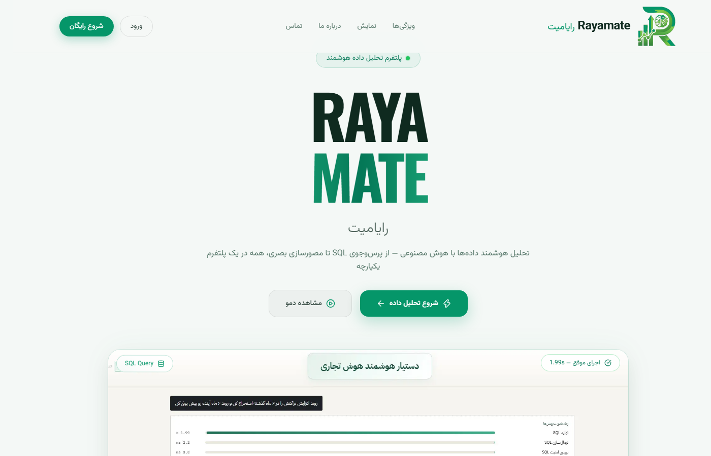
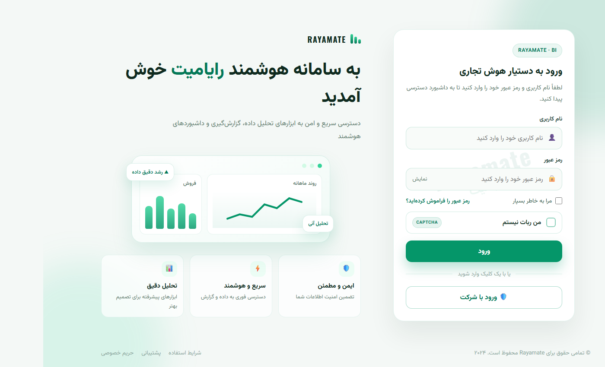
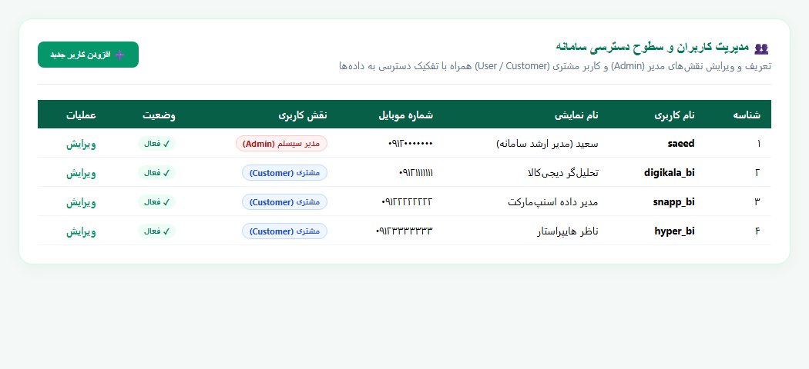
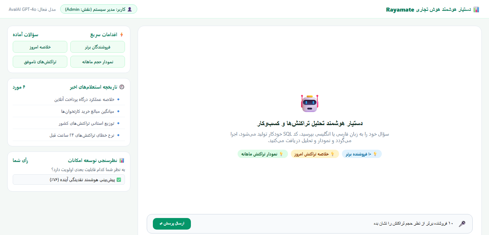
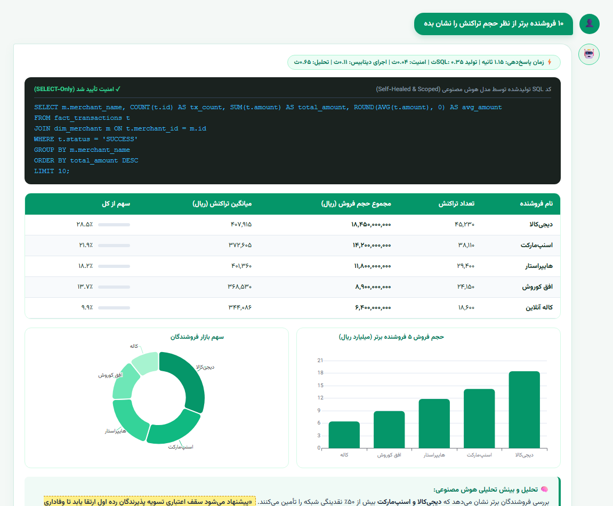
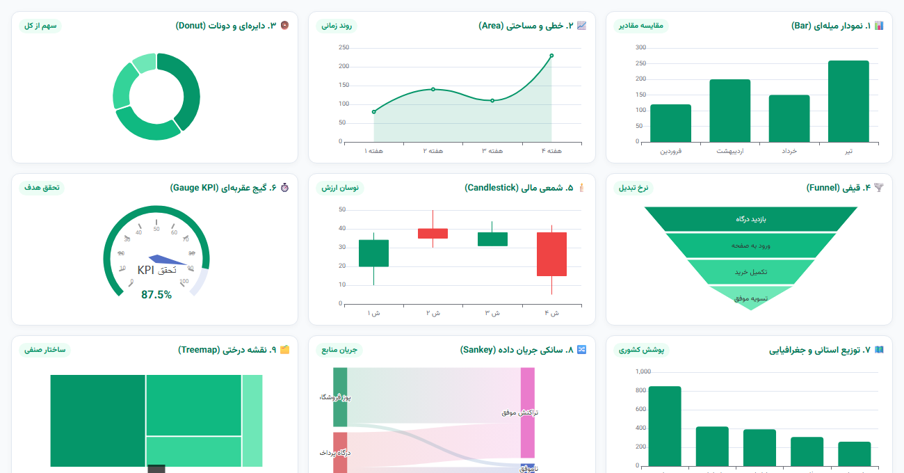
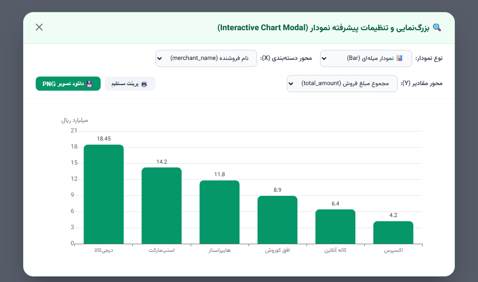
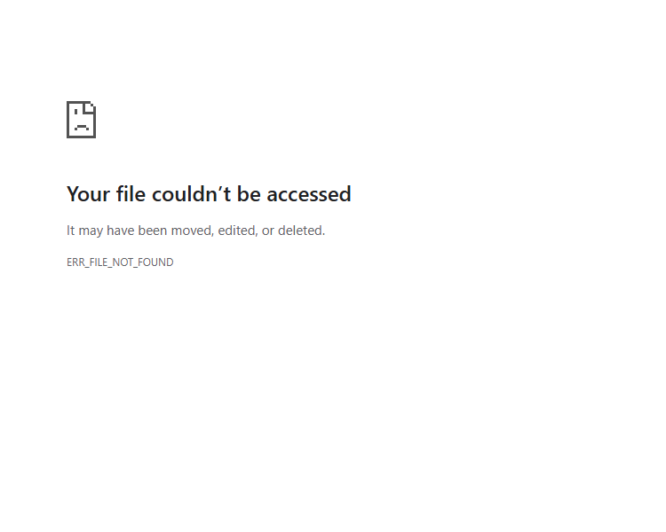

دستیار هوشمند هوش تجاری و تحلیل داده (PSP BI Assistant)
راهنمای گامبهگام کار با هوش مصنوعی تبدیل گفتار و متن طبیعی به کوئری SQL، موتور پیشرفته ECharts با ۱۰ نوع نمودار، پاپآپ تعاملی بزرگنمایی، تحلیل و چالش هوشمند دادهها، پوستر اینفوگرافیک و خروجیهای رسمی PDF/Excel.
تولید خودکار SQL با امنیت بالا، ویرایشگر زنده و رفع خودکار خطای پایگاهداده (Auto-Fix).
انتخاب خودکار هوشمندانه ECharts (میلهای، نقشه ایران، گیج KPI، سانکی، دونات و...).
تولید پوستر تصویری PNG، گفتگوی تعاملی روی متن تحلیل و خروجی PDF/Excel سازمانی.
سامانه هوش تجاری رایامیت (Rayamate BI Assistant) یک دستیار پیشرفته هوش تجاری مکالمهمحور است که به منظور تسهیل دسترسی به دادههای تراکنشی شرکتهای ارائهدهنده خدمات پرداخت (PSP) و پذیرندگان طراحی شده است. کاربران بدون نیاز به تسلط بر زبان SQL، میتوانند سوالات تحلیلی خود را به زبان طبیعی (فارسی یا انگلیسی) مطرح کرده و در کسری از ثانیه پاسخهای بصری و تحلیلی دریافت نمایند.

هر بار که کاربر سوالی را ارسال میکند، سیستم یک فرایند ۵ مرحلهای امن و هماهنگ را به صورت غیرهمگام (Async) طی میکند:
سامانه رایامیت مجهز به مکانیزم احراز هویت دومرحلهای و کنترل دسترسی مبتنی بر نقش (RBAC) است. در کنار حسابهای کاربری، جدول مشتریان (dim_customer) سطوح دادههای در دسترس هر کاربر را مشخص میکند.

| نقش کاربری | دامنه دسترسی به دادهها | امکانات مدیریتی | کاربرد اصلی |
|---|---|---|---|
| مدیر ارشد (Admin) | مشاهده تمامی تراکنشهای کل شبکه، تمام پذیرندگان و پایانهها | مدیریت کاربران، لاگها، تغییر تنظیمات مدل AI و نظرسنجی | مدیران ارشد، کارشناسان BI و نظارت شبکه PSP |
| مشتری / پذیرنده (Customer) | محدود به پذیرندگان و تراکنشهای متعلق به شرکت خود (فیلتر خودکار) | پرسش و پاسخ، مصورسازی، گزارشگیری PDF و Excel | فروشگاهها (مانند دیجیکالا، اسنپ، هایپراستار و...) |

SELECT و WITH استفاده کند. هرگونه دستور مخرب نظیر DROP, DELETE, INSERT یا ALTER فوراً متوقف و مسدود میشود.
داشبورد اصلی محیطی یکپارچه، سریع و کاملاً فارسی است که تمامی ابزارهای پرسش، تنظیمات و دسترسیهای سریع را در اختیار کاربر قرار میدهد.

دسترسی فوری به ۴ سوال کلیدی و پرتکرار سازمانی جهت بررسی سریع وضعیت بدون نیاز به نوشتن متن.
امکان مشاهده استعلامهای پیشین و بارگذاری مجدد کامل نمودارها و دادههای هر نوبت با یک کلیک.
لیست مرتبشده از پرکاربردترین تحلیلهای درخواستی شبکه جهت استفاده مدیران و کاربران جدید.
امکان تغییر آنی ارائهدهنده هوش مصنوعی (API یا Ollama محلی) و تغییر زبان پاسخها (فارسی / انگلیسی).
با کلیک روی دکمه میکروفون (🎤)، کاربر میتواند سوال خود را به زبان فارسی یا انگلیسی به صورت شفاهی بپرسد. سامانه با استفاده از موتور تشخیص گفتار پیشرفته مرورگر، صدا را به متن دقیق تبدیل کرده و در کادر پیام درج مینماید.
هنگامی که کاربر سوال خود را ارسال میکند، موتور هوش مصنوعی با توجه به طرحواره (Schema) پایگاه داده، کوئری استاندارد SQLite را تولید میکند.

سامانه مجهز به موتور مصورسازی قدرتمند Apache ECharts است. هوش مصنوعی سامانه به طور خودکار بر اساس ساختار دادهها و قصد سوال کاربر (Intent)، مناسبترین نوع نمودار را برمیگزیند.

| ردیف | نوع نمودار | شناسه ECharts | کاربرد و سناریوی اصلی |
|---|---|---|---|
| ۱ | میلهای (Bar Chart) | bar |
مقایسه فروشندگان، پذیرندگان و مبالغ تراکنش در دستههای مجزا |
| ۲ | خطی و مساحتی (Area / Line) | line |
بررسی روندهای زمانی، تغییرات هفتگی، ماهانه و نوسانات تراکنشها |
| ۳ | دایرهای و دونات (Donut / Pie / Rose) | pie |
سهم ابزارهای پرداخت (کارتخوان، اینترنتی، موبایلی) و توزیع صنفی |
| ۴ | قیفی (Funnel Chart) | funnel |
تحلیل قیف تبدیل درگاه پرداخت (ورود به درگاه → ثبت کارت → پرداخت موفق) |
| ۵ | شمعی مالی (Candlestick) | candlestick |
تحلیل نوسان مبالغ تراکنش، بالاترین و پایینترین سقف در دورهها |
| ۶ | گیج عقربهای (Gauge KPI) | gauge |
نمایش درصد تحقق تارگت ماهانه یا نرخ موفقیت تراکنشهای شبکه |
| ۷ | نقشه استانی (Iran Geo Map) | map / geo |
پراکندگی جغرافیایی تراکنشها و پذیرندگان در استانهای کشور |
| ۸ | سانکی جریان داده (Sankey Flow) | sankey |
جریان هدایت تراکنش از درگاهها به سوئیچهای بانکی و وضعیت تسویه |
| ۹ | نقشه درختی (Treemap) | treemap |
دستهبندی سلسلهمراتبی صنایع و سهم گروههای مختلف کالایی |
| ۱۰ | نقشه حرارتی (Heatmap Matrix) | heatmap |
توزیع حجم تراکنش در ساعات شبانهروز و روزهای هفته (پیک ترافیک) |
با کلیک روی آیکون زوم هر نمودار، پنجره بزرگنمایی باز میشود. در این پنجره کاربر میتواند بدون نیاز به پرسش مجدد، نوع نمودار، محور دستهبندی (X) و محور مقادیر (Y) را تغییر داده و تصویر باکیفیت PNG یا پرینت مستقیم دریافت کند.

پس از اجرای هر کوئری، هوش مصنوعی دادهها را تحلیل کرده و نکات آماری و پیشنهادهای کسبوکاری ارائه میدهد.
شناسایی افت ناگهانی تراکنشها، پذیرندگان کمکار و هشدارهای امنیتی در متن تحلیل.
کاربر میتواند هر جمله از تحلیل را انتخاب و اعتراض خود را بنویسد؛ سیستم متن را اصلاح و جایگزین میکند.
پلتفرم به صورت خودکار شاخصهای کلیدی عملکرد (KPIs) شامل مجموع تراکنش، حجم نقدینگی، نرخ موفقیت و سهم پذیرندگان برتر را در قالب یک پوستر گرافیکی شیک و مدرن با تم رنگی زمردی محاسبه و آماده دانلود PNG میکند.

| فرمت خروجی | محتویات فایل | ویژگیهای فنی و مزایا |
|---|---|---|
| فایل PDF رسمی | عنوان گزارش، توضیح متنی، تصاویر نمودارهای ترسیمشده، جدول کامل دادهها با فرمت مالی، تحلیل نهایی هوش مصنوعی | طراحی با فونت فارسی استاندارد وزیرمتن، راستچین کامل، صفحهبندی هوشمند، بدون بههمریختگی حروف و کاملاً وکتور |
| فایل اکسل چندشیتی (.xlsx) | شیت ۱: دادههای خام (Data) شیت ۲: توضیحات و کوئری (Explanation) شیت ۳: متن کامل تحلیل (Analysis) |
ساختار ستونی مرتب، فرمتبندی اعداد به صورت عددی جهت محاسبات فرمولی، سربرگهای رنگی رسمی |
در بالای هر پاسخ، یک نشانگر زمانبندی دقیق درج شده است که نشان میدهد هر بخش چه مقدار زمان مصرف کرده است:
⚡ زمان پاسخدهی: ۱.۱۵ ثانیه | تولید SQL: ۰.۳۵ث | گارد امنیت: ۰.۰۴ث | اجرای دیتابیس: ۰.۱۱ث | تحلیل هوش مصنوعی: ۰.۶۵ث